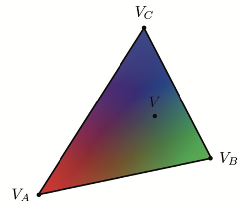
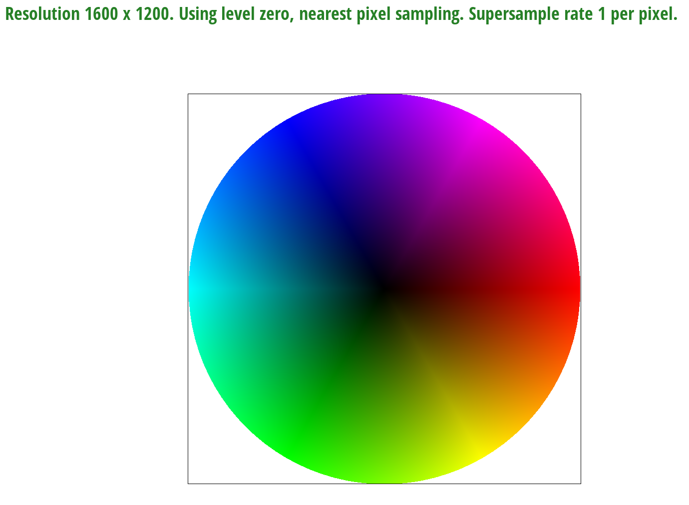

We were able to rasterize triangles by calculating the differences between all of the adjacent points on each triangle and performing the three line test to check whether or not a pixel in the image was indeed inside a triangle. If it was inside the triangle, or even on the edge, then we filled in the pixel with the fill_pixel function. Our algorithm is no worse than one that checks each sample within the bounding box of the triangle because that was my first approach. We have further optimized this approach as discussed in the Special Optimizations section below.
Barycentric coordinates are useful for interpolation across triangles. Interpolation is useful for specifying values, in our case color, at vertices and obtaining varying values across the surface. In this image, we have a single triangle with three vertices: one blue, green, and red. These vertices ultimately produce a smoothly blended color triangle  
Pixel sampling is